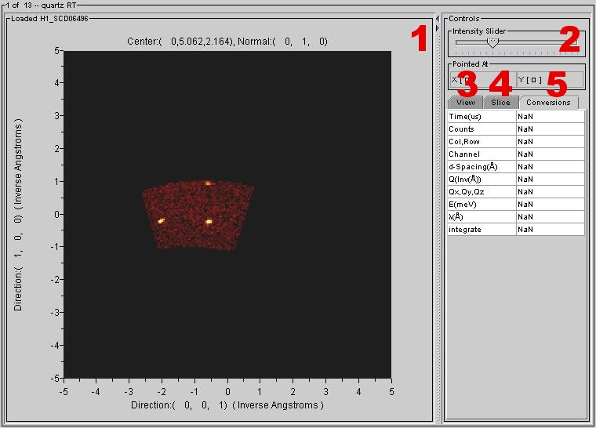

HKL Slice View
Contents |
Introduction:
The HKL slice viewer is designed to view two-dimensional slices of data sets in Qxyz space.
Getting Started:
Launching HKL Slice View
Before launching the HKL slice view, there must be data loaded in the tree.
The HKL slice view also requires that an orientation matrix be loaded.
Click on the DataSet of interest and then follow the menus:
View > HKL Slice View

Viewer Window:
1 HKL Slice Display
This displays the HKL slice for the selected DataSet.
2 Controls
Intensity Slider – This is used to control the image intensity in the HKL slice display.
Pointed At – This readout displays the XY coordinates of the currently selected point.
3 View Tab
Color Scale – This displays the color scale currently being used in the HKL slice display
Marker Overlay – This option requires that an orientation matrix be loaded. This overlay will display markers at points with integer h,k,l values.
Axis Overlay – Check this box to show a grid axis overlay in the HKL slice display. Click the edit button to modify the grid’s appearance.
Selection Overlay – Check this box to show a selection overlay in the HKL slice display. Click the edit button to modify the overlay’s appearance. The overlay can be added by holding and dragging a mouse button in the HKL slice display while the edit window is open.
Note: Crosshairs are not available when a selection overlay is displayed.
Annotation Overlay – Check this box to show an annotation overlay in the HKL slice display. Click the edit button to change the annotation’s appearance.
Note: Crosshairs are not available when an annotation overlay is displayed.
4 Slice Tab
Slice in Qxyz Space
Display in Q
Select in Q
Select Qxyz Plane
CN Tab – This allows users to select the center and normal. The coordinates are either Qxyz or hkl.
CPP Tab – This allows users to select the center, a vector to represent one unit in the x direction, and a vector to represent one unit in the y direction.
CNP Tab – This allows users to select the center, normal, and one point on the plane.
CQxyz Tab – This allows users to select the center and choose to step along planes of constant H,K, or L or constant Qx, Qy, or Qz.
Select Plane Size
Step Size – Use this input field to edit the step size for a series of slices.
Width – Use this input field to edit the width of the slice shown in the HKL slice display.
Height – Use this input field to edit the height of the slice shown in the HKL slice display.
Thickness – Use this input field to edit the thickness of each slice.
Step In/Out
Step Depth – Use this input field to control how far the viewer should step in or out of the slice.
Controls
< Step out once according to the Step Depth setting.
> Step in once according to the Step Depth setting.
5 Conversions Tab
These readouts provide information about the currently selected point in the HKL slice display including time, the number of counts, the currently selected column/row, channel, d-spacing, Q value, Q space coordinates, energy, wavelength, and integrate.
Viewer Menus
File
Save DataSet to file – This option saves the current DataSet as a new file. Supported formats include NeXus, GSAS, ISAW XML, ZIP, and ISD.
Save Image – Select this option to save the visible portion of the viewer window as a JPEG picture file.
Print – This option prints the visible portion of the viewer window as it appears on the screen.
Save Object State – This option is used to save the current object state as an ISV state file.
Load Object State – This option is used to load a saved object state file.
Close Viewer – This option closes the HKL slice view window.
Edit
Sum – This option is used to sum all counts of either the selected or unselected spectra.
Delete – This option is used to delete all counts of either the selected or unselected spectra.
Clear – Use this option to clear all select flags.
Sort by – This option is used to sort the graph data.
View
Additional View – This option creates a duplicate HKL slice view window. This new window can then be changed to a different view type.
Image View – This option changes the current window to an image view window.
3D View – This option changes the current window to a 3D view window.
HKL Slice View – This option changes the current window to a HKL Slice view window.
Contour View – This option changes the current window to a Contour view window.
Scrolled Graph View - This option changes the current window to a Scrolled Graph view window.
Selected Graph View - This option changes the current window to a Selected Graph view window.
Selected Table View – This option changes the current window to a Selected Table View window.
Table Generator – This option changes the current window to a Table Generator window.
Axis Conversions – This option changes the X-axis to a different unit of measurement.
Options
Link Views – Select this option to link the current view with any additional views of the same data set that also have this option selected. This is on by default so that pointing the cursor in one view affects all views of the same data.